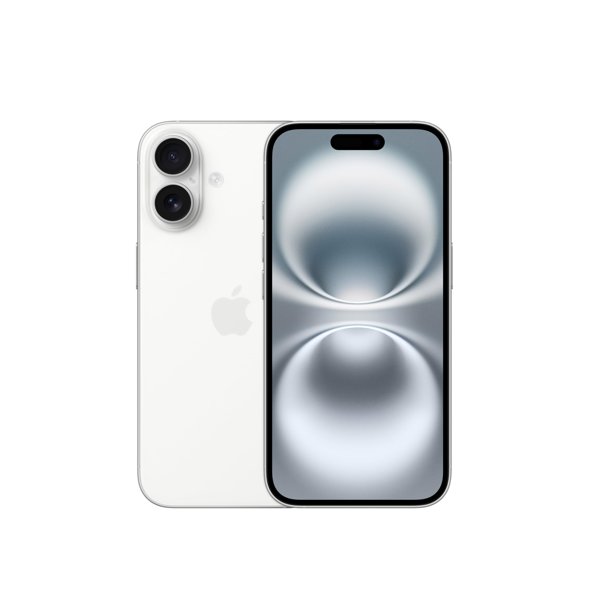
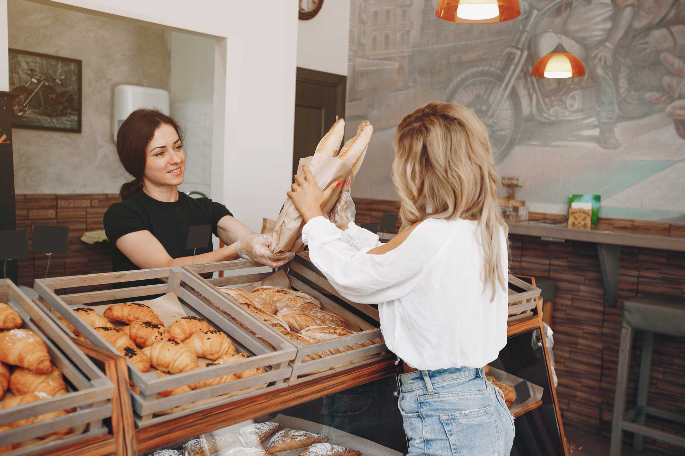

Meus projetos
A serie Lucifer
Lucifer é uma série que segue Lucifer Morningstar, o Diabo, que abandona o Inferno para viver em Los Angeles. Lá, ele abre um clube noturno e se torna consultor da polícia, ajudando a resolver crimes enquanto explora questões sobre seu destino, redenção e identidade. A trama mistura mistério, drama e elementos sobrenaturais com toques de humor. ...

Iphone 16
O iPhone 16, ainda não anunciado oficialmente, promete melhorias em desempenho, câmeras e design. Espera-se que traga processador mais rápido, telas de alta qualidade e inovações no sistema de câmeras, além de possíveis avanços em inteligência artificial e realidade aumentada. A Apple provavelmente também implementará novas funcionalidades no iOS, focando em experiência do usuário. ...

Panificadora
A padaria é um lugar acolhedor, onde o aroma do pão fresquinho invade o ambiente logo pela manhã. Oferece uma variedade de pães, bolos, biscoitos e tortas, feitos com ingredientes frescos e receitas tradicionais. Clientes locais se reúnem para comprar delícias, como croissants e pães de queijo, enquanto desfrutam de um café quente e do atendimento simpático.